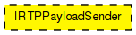

Interface for RTP Payload Senders.
These modules are internal to the RTP module; instances are created and connected dynamically by RTPProfile.
The following diagram shows usage relationships between types. Unresolved types are missing from the diagram.
The following diagram shows inheritance relationships for this type. Unresolved types are missing from the diagram.
// // Interface for \RTP Payload Senders. // // These modules are internal to the RTP module; instances are created // and connected dynamically by RTPProfile. // moduleinterface IRTPPayloadSender { gates: input profileIn @labels(RTPInnerPacket); output profileOut @labels(RTPInnerPacket); }